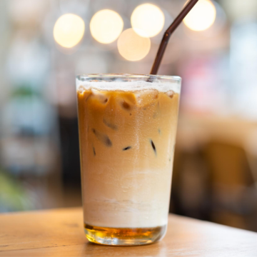

Iced Coffee

Description
You have woken up on a hot summer morning. You can't imagine your morning without coffee but its so hot outside and in your bedroom (and not just because YOU'RE hot). What do you do?
Have no fear! This iced coffee is just what you need on a hot summer morning!
And the best part - you can make this once and store it in freezer! For how long - it all depends on the size of your coffee pot and freezer.
Ingredients
- Coffee
- Milk
- Ice trays
- Freezer
Steps
- Make a pot of coffee, 2x or 3x stronger than you usually do (think "How strong coffee does Dale Cooper drink?")
- Pour it in ice trays
- Put the ice trays in freezer
- When frozen, take them out, put some 5 or 6 pieces of our coffee ice in a glass and pour the milk over them until the glass is full
- Stir and have a nice cup of cold coffee on a hot summer morning!